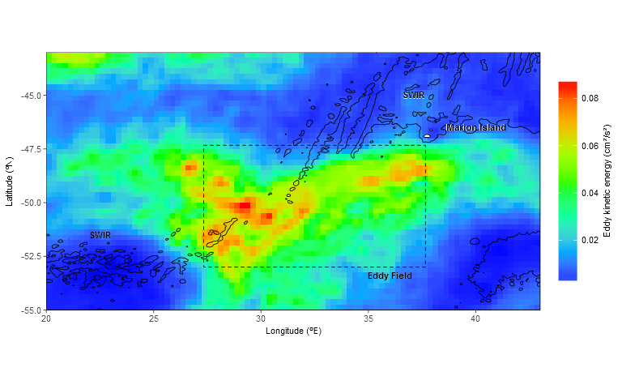
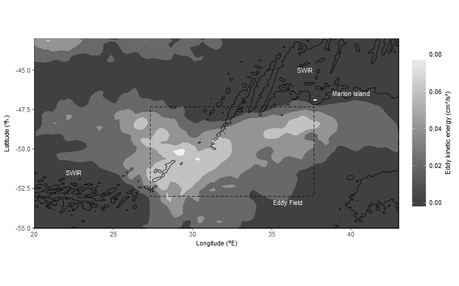

TOC
Introduction
Preparing figures for publication can take a long time (well it does for me anyway), and I relied very heavily on numerous online resources to figure out some of the dos and don’ts. Obviously I owe massive thanks to the hundreds of blogs and Stack Exchange questions and answers I relied on. Where I can, I will try to link to them.
Additionally, this tutorial covers a little bit about working with reshaped gridded data, shape files, GeoTIFF data and even a simple homemade polygon. This then is my contribution to folks trying to get their plots to look the way they need them to.
As most people know, publishing in colour is way more expensive than in grey scale. The costs were completely prohibitive for myself and my co-authors, so I made efforts to change my beautiful, spectacularly coloured plots, which looked so nice in slide shows, into grey scale.
The data
This plot is showing mean values of the derived variable eddy kinetic (EKE) energy to the south west of Marion Island (in the Southern Ocean) from 2008 to 2010. Interactions between the Antarctic Circumpolar Current and a series of undersea faults in the South West Indian Ridge, give rise to an area of instability, and it is the degree and extent of this instability that I set out to investigate via EKE.
EKE is derived from u and v components like this. The friendly folks at AVISO have kindly let me use and make available this subset of their data for the purpose of this tutorial. Perhaps if someone is interested I’ll make another post showing how I went about the calculations and wrangling.
If you are interested in this sort of data, please check out AVISO. They make available unfathomable amounts of absolutely beautiful data for free. All you need is an account and it’s yours - Honestly access to data like this blows my mind. I wish it was like this with South African regional data… but that’s another story.
Method
Start by loading all the necessary libraries, setting working directories and loading data. You can download the EKE data set here.
library(sp)
library(rgdal)
library(raster)
library(ggplot2)
library(plyr)
load(file = "data/data.eke.rdata")
head(data.eke)## lon lat eke
## 1 -18.875 -68.625 1.052298e-04
## 2 -18.875 -68.375 1.009409e-04
## 3 -18.875 -68.125 7.404519e-05
## 4 -18.875 -67.875 6.044744e-05
## 5 -18.875 -67.625 8.102543e-05
## 6 -18.875 -67.375 9.289138e-05
# When we derive EKE, grid cells over land produce NaNs, so we must replace them with NAs
data.eke$eke[which(is.nan(data.eke$eke))] <- NADefine our map extents
The EKE data spans from -18.875 E to 43.875 E and -38.88 N to -68.62 N. Those are the extents needed for the full study, but it’s too much for the plot, so we must subset it.
latmin <- -55
latmax <- -43
lonmin <- 20
lonmax <- 43
map.extents <- extent(lonmin, lonmax, latmin, latmax)
data.eke.sub <- subset(data.eke,
data.eke$lat >= latmin &
data.eke$lat <= latmax &
data.eke$lon >= lonmin &
data.eke$lon <= lonmax)Shape Files
The plot area includes the Prince Edward Islands. Instead of leaving blank, blocky spaces, let’s use some shape files to make it look neater. These shape files come from http://www.naturalearthdata.com. They are from the ‘fine scale (1:10), Admin 0 -Countries’ set available for free from here.
# read in the shape file
countries <- readOGR("shapes", layer="ne_10m_admin_0_countries")
# Add an id column to the data slot of countries, based on rownames
countries@data$id <- rownames(countries@data)
# Fortify the spatial polygons for ggplot2 - likes long format data
# The resulting data frame contains all the spatial data and the id but no information labels.
countries.df <- fortify(countries)
# Use the id column to join all the label data in countries@data to the new dataframe.
countries.df <- join(countries.df, countries@data, by="id")
# Now we can subset the new dataframe to include only South Africa and her Islands and tidy up a bit
za <- subset(countries.df, countries.df$ISO_A2=="ZA")
rm(countries, countries.df)GeoTIFF
The plot needs some bathymetric contour lines. We will use the ETOPO1 data for this via a GeoTIFF. There are higher resolution data sets around (e.g. ETOTPO2 and GEBCO) but ETOPO1 will suffice for this application. The ETOPO1 data is (freely?) available from here.
# Load up the geotiff
etopo1.full <- raster("etopo/ETOPO1_Ice_c_geotiff.tif")
# Crop out our ROI
etopo.crop <- crop(etopo1.full, map.extents)
# Prepare for ggplot2 (long format) and tidy up a bit
etopo.crop.df <- as.data.frame(etopo.crop, xy=TRUE)
names(etopo.crop.df) <- c("long", "lat", "z")
rm(etopo1.full)Polygon
Lastly we’ll build a simple polygon to demarcate an area we consider within the region of elevated EKE (eddy field).
# Define extents
eflatmin <- -53
eflatmax <- -47.33
eflonmin <- 27.33
eflonmax <- 37.66
# bind the data into sequential coordinates, outlining the new polygon and generate a polygon.
ef.coords <- cbind(c(eflonmin, eflonmax, eflonmax, eflonmin, eflonmin),
c(eflatmax, eflatmax, eflatmin, eflatmin, eflatmax))
ef.poly <- Polygon(ef.coords)
# Prepare for ggplot2 and tidy up
ef.df <- fortify(ef.poly)
# set an individual group for plotting
ef.df$group <-1
rm(ef.coords, ef.poly)Plot time
Finally we have all the bits in place so we can build a plot. We’ll start with the colourful version, and then see how to refine it to a grey scale contoured version.
Preliminaries
We start by defining the plot label positions and text and then set some custom theme stuff. See here for more on theming.
# define some lables and their coordinates
lbl <- data.frame(x = c(40, 36, 30, 37.1, 22.5),
y = c(-46.5, -53.4, -50, -45, -51.5),
txt = c("Marion Island", "Eddy Field", " ", "SWIR", "SWIR"))
# Define the theme data as I like it for these plots...
thm <- theme_bw() +
theme(axis.text.x = element_text(size=8, face = "plain"),
axis.text.y = element_text(size=8, face = "plain"),
axis.title.x = element_text(size=8, face = "plain"),
axis.title.y = element_text(size=8, face = "plain"),
axis.ticks.x = element_line(size=0.3),
axis.ticks.y = element_line(size=0.3),
legend.key.height = unit(13, units="mm"),
legend.text = element_text(size=8, face = "plain"),
legend.title = element_text(size=8, angle = 90, vjust = 1, face = "plain"),
legend.title.align = 0.5,
panel.border = element_rect(colour = "black", fill=NA, size=.3))Coloured tiles plot
Ggplot2 is even more awesome than anything you might have read, but it can be intimidating (I find). The best I can suggest is to keep playing and you’ll start to get a handle on. One of the biggest difficulties for me was figuring out what order the layers should be in. This is where I ended up. I’d like to tell you that I had figured out an overriding set of rules, but there was some trial and error involved.
I have tried to comment the coloured plot extensively.
# initiate the plot
plot.eke.colour <- ggplot() +
# include a layer with the eke data as coloured tile data
geom_tile(data=data.eke.sub, aes(x=lon,y=lat,fill=eke)) +
# include the shape file data
geom_polygon(data = za, aes(x = long, y = lat, group = group),
colour="black", fill="white", alpha=1, size = 0.3) +
# include the home made polygon data
geom_polygon(data=ef.df, aes(x=long, y=lat, group=group),
colour="black", fill="white", alpha=0, linetype="dashed", size = 0.3) +
# include the bathymetry data with geom_contour. Define a single custom break
geom_contour(data=etopo.crop.df, aes(x=long,y=lat,z=z),
breaks=c(-3000), colour="black", size = 0.3) +
# axis lables
labs(x = 'Longitude (ºE)', y = 'Latitude (ºN)') +
# map projection - boring choice but suits the task at hand
coord_map("mercator") +
# this trims unwanted whitespace around the plot
coord_fixed(xlim = c(lonmin, lonmax), ylim = c(latmin, latmax), expand = FALSE) +
# change the default EKE colour to more traditional rainbow colours (oceanography etc)
scale_fill_gradientn(colours = rev(rainbow(7, end=4/6)),
space = "Lab",
guide = guide_colorbar(title="Eddy kinetic energy (cm²/s²)",
title.position="right")) +
# include the lables defined earlier
geom_text(data=lbl, aes(x=x, y=y, label=txt), size=rel(3), colour="white", fontface="bold", alpha = 1) +
geom_text(data=lbl, aes(x=x+0.01, y=y+0.01, label=txt), size=rel(3), colour="black", fontface="bold") +
# include the theme settings
thm
plot.eke.colour
That looks pretty good. Unfortunately when we save the file, things don’t always look the same as they do on the screen so there is generally some fine tuning involved. This version, as it stands, makes rather a good print. The colour palette is familiar to all my MATLAB/Python oceanographic colleagues too.
Saving the plot according to the publishers requirements
For completeness, this is one approach to saving your plots
ggsave(filename = 'plot.eke.colour.png', plot = plot.eke.colour, width = 174, height = 105, units="mm", dpi = 300, type="cairo-png")Greyscale contoured plot
If we just jump in and plot the existing data using the stat_contour() approach we immediately hit a problem. It’s a little difficult to explain, but easy enough to understand if you play around a bit. I’ll try my best.
Some of the contoured values exist as closed polygons within the plot frame. These plot as we would expect. Unfortunately, other contoured values are (now) polylines. These lines would have closed somewhere outside of the plot extents, but were cropped, resulting in open polygons/polylines. As a result, ggplot2 can’t fill them with shading as required. Ggplot2 closes them automatically by joining their ends. This is pretty catastrophic. You can see what happens for yourself by exchanging data.eke.sub.contour for data.eke.sub in the plot code below.
Calculate a low arbitrary value
To avoid this we need to add extra, make-believe EKE data just outside the plotting frame. We set this to a low, arbitrary value which allows ggplot2 to close off the contour polygons which we are interested in. What the arbitrary value is, is not that important, as long as it is lower than everything else. I found this approach on stackoverflow here. It looks at the data spread, divides it into n bins and sets an arbitrary value according to the lowest value minus the bin width * 1.5.
bins <- 50
bin.width <- diff(range(na.omit(data.eke.sub$eke))) / bins
arbitary.value <- min(na.omit(data.eke.sub$eke)) - bin.width * 1.5
# Build some data frames representing 1 degree of extra EKE data in each direction, with the arbitrary value as EKE
min <- sapply(data.eke.sub, min, na.rm = TRUE)
max <- sapply(data.eke.sub, max, na.rm = TRUE)
seq.lat <- seq(min['lat'], max['lat'], 0.25)
seq.lon <- seq(min['lon'], max['lon'], 0.25)
west.edge <- data.frame(lon = rep(min['lon'] - 1, length(seq.lat)), lat = seq.lat, eke = arbitary.value)
east.edge <- data.frame(lon = rep(max['lon'] + 1, length(seq.lat)), lat = seq.lat, eke = arbitary.value)
south.edge <- data.frame(lon = seq.lon, lat = rep(min['lat'] - 1, length(seq.lon)), eke = arbitary.value)
north.edge <- data.frame(lon = seq.lon, lat = rep(max['lat'] + 1, length(seq.lon)), eke = arbitary.value)
# rbind the new data to the existing data and tidy up
data.eke.sub.contour <- rbind(data.eke.sub, west.edge, east.edge, north.edge, south.edge)
rm(bins, bin.width, arbitary.value, min, max, seq.lat, seq.lon, west.edge, east.edge, north.edge, south.edge)Now we plot
Now, with our newly padded dataset, we can complete the greyscale plot. I’ve only commented the changed lines in this plot (vs. the colour plot above).
plot.eke.contour.grey <- ggplot() +
# This line denotes the newly padded data, as a contour statistic.
# ..level.. indicates that the fill aesthetic is calculated by the contour statistic.
# breaks manually define which contours we want to keep.
stat_contour(data = data.eke.sub.contour, aes(x = lon, y = lat, z = eke, fill = ..level..),
geom = "polygon", breaks = c(0, 0.02, 0.04, 0.06, 0.08)) +
geom_polygon(data = za, aes(x = long, y = lat, group = group),
colour="black", fill="white", alpha=1, size = 0.3) +
geom_polygon(data=ef.df, aes(x=long, y=lat, group=group),
colour="black", fill="white", alpha=0, linetype="dashed", size = 0.3) +
geom_contour(data=etopo.crop.df, aes(x=long,y=lat,z=z), breaks=c(-3000), colour="black", size = 0.3) +
coord_map("mercator") +
coord_fixed(xlim = c(lonmin, lonmax), ylim = c(latmin, latmax), expand = FALSE) +
labs(x = 'Longitude (ºE)', y = 'Latitude (ºN)') +
# Here the grey scale colours are defined for the plot and the legend
scale_fill_gradient(low = "gray25", high = "gray95",
space = "Lab",
guide = guide_colorbar(title="Eddy kinetic energy (cm²/s²)", title.position="right")) +
geom_text(data=lbl, aes(x=x, y=y, label=txt), size=rel(3), colour="white") +
thm
plot.eke.contour.grey
There we go! The contours look great. There aren’t too many of them, they don’t have distracting borders, the 3000 m bathymetry contour looks nice and isn’t overly distracting.
Saving the plot according to the publishers requirements
For completeness, this is one approach to saving your plots
ggsave(filename = 'plot.eke.contour.grey.png', plot = plot.eke.contour.grey, width = 174, height = 105, units="mm", dpi = 300, type="cairo-png")I hope this helps someone :) Github repo